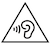
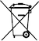

फ़ोन के बारे में जानकारी सुरक्षा और नियमों के मैन्युअल पर जाएं.
फ़ोन के बारे में जानकारी सुरक्षा और नियमों के मैन्युअल पर जाएं.प्रॉडक्ट की जानकारी कहां मिलेगी
सही देखरेख और इस्तेमाल से जुड़ी जानकारी
इस गाइड में, सुरक्षा से जुड़े बुनियादी दिशा-निर्देशों के बारे में बताया गया है. ये दिशा-निर्देश, Pixel 6a फ़ोन के साथ मिलने वाली उस बुकलेट में भी दिए गए हैं जिसमें सुरक्षा और वारंटी से जुड़ी जानकारी है. इसमें Pixel 6a फ़ोन की सुरक्षा, नियम, और वारंटी से जुड़ी कुछ और जानकारी भी शामिल है.
सुरक्षा और नियमों के पालन की जानकारी: g.co/pixel/safety या सेटिंग फ़ोन के बारे में जानकारी सुरक्षा और नियमों के मैन्युअल पर जाएं.
आपने जिस देश में प्रॉडक्ट खरीदा है वहां मिलने वाली वारंटी की जानकारी. इसमें किसी तरह का दावा करने के निर्देश भी शामिल हैं: g.co/pixel/warranty.
आपके फ़ोन के लिए, इलेक्ट्रॉनिक नियमों के लेबल और स्पेसिफ़िक ऐब्ज़ॉर्पशन रेट (एसएआर) की सभी वैल्यू की जानकारी के लिए:
सेटिंग फ़ोन के बारे में जानकारी नियमों के लेबल पर जाएं.
हर तरह की ऑनलाइन मदद: g.co/pixel/help.
 |
चेतावनी: इस्तेमाल करने से पहले, स्वास्थ्य और सुरक्षा से जुड़ी जानकारी पढ़ें. ऐसा करने से कुछ खतरों से आपका बचाव हो पाएगा. इसमें चोट लगना, असुविधा होना, और अन्य संभावित खतरे शामिल हैं. इसके अलावा, Pixel 6a फ़ोन की ऐक्सेसरी या कनेक्ट किए गए डिवाइसों के साथ-साथ अन्य प्रॉपर्टी को भी नुकसान से बचाया जा सकेगा. |
अपने फ़ोन की सही से देखरेख करें. फ़ोन को खोलने, गिराने, मोड़ने, जलाने, कुचलने या उसमें छेद करने से आपके फ़ोन या उसकी बैटरी को नुकसान पहुंच सकता है. ऐसे Pixel फ़ोन का इस्तेमाल न करें जिसकी स्क्रीन या पिछला कवर टूट गया हो या फ़ोन को किसी भी तरह का कोई नुकसान हुआ हो. टूटा-फूटा फ़ोन इस्तेमाल करने से फ़ोन ज़्यादा गर्म हो सकता है या इसका इस्तेमाल करने वाले को नुकसान पहुंच सकता है. अपने फ़ोन को पानी या दूसरी तरल चीज़ों से दूर रखें. इससे शॉर्ट सर्किट या फ़ोन के ज़्यादा गर्म होने का खतरा हो सकता है. अगर आपका फ़ोन भीग जाता है, तो उसे सुखाने के लिए किसी मशीन का इस्तेमाल न करें.
आपके फ़ोन को 32° से 95° फ़ैरनहाइट (0° और 35° सेल्सियस) तापमान के बीच इस्तेमाल करने के लिए डिज़ाइन किया गया है. इसे -4° से 113° फ़ैरनहाइट (-20° और 45° सेल्सियस) के बीच के तापमान वाली जगह पर रखा जाना चाहिए. अपने फ़ोन को 113° फ़ैरनहाइट (45° सेल्सियस) से ज़्यादा तापमान पर न रखें, जैसे कि कार के डैशबोर्ड पर या हीटिंग वेंट के पास. ऐसा करने से फ़ोन को नुकसान हो सकता है. उसकी बैटरी ज़रूरत से ज़्यादा गर्म हो सकती है या उसमें आग भी लग सकती है. अपने फ़ोन को गर्म चीज़ों से दूर रखें और उसे सीधी धूप से बचाएं. अगर आपका फ़ोन चार्ज होते समय ज़्यादा गर्म हो जाता है, तो उसे चार्जिंग से हटा दें. इसके बाद, उसे किसी ठंडी जगह पर ले जाएं और तब तक इस्तेमाल न करें, जब तक वह ठंडा न हो जाए. आपका फ़ोन इस तरह से डिज़ाइन किया गया है कि यह 6,562 फ़ीट (2,000 मीटर) तक की ऊंचाई पर सबसे अच्छी तरह से काम करता है.
गेम खेलने, वीडियो बनाने, फ़्लैशलाइट सेटिंग का इस्तेमाल करने, वर्चुअल रिएलिटी या ऑगमेंटेड रिएलिटी (एआर) सुविधा जैसे कुछ खास मोड में इस्तेमाल करने पर, आपका फ़ोन सामान्य से ज़्यादा गर्म हो सकता है. इस वजह से हो सकता है कि आपका फ़ोन, कम पावर वाले मोड में काम करे या कुछ देर के लिए बंद हो जाए. इन मोड का इस्तेमाल करते समय ज़्यादा सावधानी बरतें. लंबे समय तक गर्म चीज़ों के संपर्क में रहने से जुड़े जोखिमों के बारे में ज़्यादा जानकारी के लिए, कृपया नीचे दिया गया सेक्शन देखें.
अपने फ़ोन को खुद ठीक करने की कोशिश न करें. फ़ोन को खोलने से, उसके पानी के असर से बचने की क्षमता खत्म हो सकती है. साथ ही, आपको चोट भी लग सकती है या फ़ोन को नुकसान हो सकता है.
उदाहरण के लिए, फ़ोन खोलने पर इसमें मौजूद लेज़र में खराबी आ सकती है. इसकी न दिखने वाली खतरनाक लेज़र किरणें, आपको नुकसान पहुंचा सकती हैं.
अगर फ़ोन ठीक से काम नहीं करता है या टूट जाता है, तो ग्राहक सेवा से संपर्क करें. ज़्यादा जानकारी के लिए g.co/pixel/contact पर जाएं.
ध्यान रखें कि इस्तेमाल या चार्ज करते समय, फ़ोन और इसके पावर अडैप्टर के आस-पास की जगह खुली या हवादार हो. खराब केबल या पावर अडैप्टर का इस्तेमाल करने या नमी वाली जगह पर चार्ज करने से बिजली का झटका या आग भी लग सकती है. इससे आपको चोट लग सकती है और फ़ोन या आस-पास की दूसरी चीज़ों को भी नुकसान पहुंच सकता है. फ़ोन के भीग जाने पर उसे चार्ज न करें. फ़ोन को ऐसी जगह चार्ज न करें जहां उस पर सीधी धूप पड़े.
फ़ोन को चार्ज करते समय यह पक्का कर लें कि पावर अडैप्टर, पावर सॉकेट में ठीक से लगा हो और सॉकेट, फ़ोन के पास हो, ताकि तार में खिंचाव न हो. अगर पावर सॉकेट में काफ़ी जगह न हो, तो इस पावर अडैप्टर या किसी दूसरे प्लग या पावर अडैप्टर को सॉकेट में ज़बरदस्ती न लगाएं. पावर अडैप्टर को पावर सॉकेट से निकालते समय सिर्फ़ चार्जिंग केबल नहीं, बल्कि पूरा अडैप्टर निकालें. केबल को न तो मोडें और न ही दबाएं. साथ ही, कनेक्टर को ज़बरदस्ती किसी पोर्ट में घुसाने की कोशिश न करें. अगर चार्ज करते समय आपको चार्जिंग डिवाइस या पावर अडैप्टर को अनप्लग करने का मैसेज मिलता है, तो पावर अडैप्टर या चार्जिंग डिवाइस को निकाल दें. फ़ोन को फिर से चार्ज पर लगाने से पहले, यह पक्का कर लें कि चार्जिंग केबल कनेक्टर और फ़ोन का चार्जिंग पोर्ट, दोनों सूखे और पूरी तरह से साफ़ हों.
फ़ोन को सिर्फ़ उसके साथ दी गई केबल या फ़ोन के साथ काम करने वाली चार्जिंग ऐक्सेसरी से ही चार्ज करें, जो Google Store या Google के अधिकृत रीसेलर के पास उपलब्ध हैं ("Made for Google" का बैज देखना न भूलें). AC अडैप्टर का आईईसी 60950-1 के मानकों के मुताबिक, सीमित पावर सप्लाई आउटपुट के तौर पर और/या आईईसी 62368-1 के मानकों के मुताबिक PS2 के तौर पर प्रमाणित होना ज़रूरी है: यूएसबी पीडी की सुविधा वाले AC अडैप्टर को 5 वोल्ट डीसी और 9 वोल्ट डीसी पर ज़्यादा से ज़्यादा 3 एंपियर पावर सप्लाई के लिए रेट किया गया है. साथ ही, यह आईईईई 1725 मानक के तहत तय सीटीआईए सर्टिफ़िकेशन रिक्वायरमेंट्स फ़ॉर बैटरी सिस्टम कंप्लायंस के मुताबिक भी सही होना चाहिए. चार्ज करने वाली सही ऐक्सेसरी इस्तेमाल न करने पर आग लग सकती है, बिजली का झटका लग सकता है या आपको चोट लग सकती है. इसके अलावा, फ़ोन और उसके साथ मिलने वाली ऐक्सेसरी को भी नुकसान पहुंच सकता है.
फ़ोन और उसका चार्जर सामान्य इस्तेमाल के दौरान थोड़े गर्म हो जाते हैं. ये दोनों, सतह के तापमान के लिए तय मानकों और पाबंदियों का पालन करते हैं. इस्तेमाल या चार्ज करते समय, फ़ोन को लंबे समय तक त्वचा के संपर्क में न रखें. ज़्यादा देर तक गर्म चीज़ों के संपर्क में रहने पर, आपको परेशानी या जलन महसूस हो सकती है. फ़ोन या पावर अडैप्टर को पास रखकर न सोएं. साथ ही, उन्हें कंबल या तकिये से न ढकें. अगर आपको त्वचा पर गर्मी का जल्दी एहसास नहीं हो पाता है, तो इस समस्या के बारे में ज़्यादा सतर्क रहें.
यह फ़ोन कोई खिलौना नहीं है. आपके फ़ोन में (या इसके साथ मिलने वाले सामान में) छोटे-छोटे पुर्ज़े, प्लास्टिक की चीज़ें, कांच या धातु की बनी चीज़ें, और तेज़ धार वाले पुर्ज़े लगे हो सकते हैं. इनसे चोट लग सकती है या गले में अटकने पर दम भी घुट सकता है. कॉर्ड और केबल, बच्चों के गले में फंस सकते हैं. फ़ोन के कॉर्ड और केबल को बच्चों की पहुंच से तीन फ़ुट (0.9 मीटर) से ज़्यादा की दूरी पर रखें. बच्चों को फ़ोन और इसके साथ मिलने वाली ऐक्सेसरी के साथ न खेलने दें. इससे वे खुद को या दूसरों को चोट पहुंचा सकते हैं. इसके अलावा, उनसे गलती से फ़ोन खराब भी हो सकता है. अगर बच्चे छोटे पुर्ज़े निगल लें, तो उन्हें तुरंत डॉक्टर के पास ले जाएं.
|  | लंबे समय तक तेज़ आवाज़ सुनते रहने से सुनने की क्षमता कम हो सकती है. इसमें संगीत सुनना भी शामिल है. कान को किसी तरह के नुकसान से बचाने के लिए, लंबे समय तक तेज़ आवाज़ में सुनने से बचें. लगातार तेज़ आवाज़ और बैकग्राउंड वाला शोर सुनते रहने पर, तेज़ आवाज़ भी धीमी लगने लगती है. हेडफ़ोन या इयरफ़ोन इस्तेमाल करने से पहले जांच लें कि आवाज़ कितनी है. |
इस फ़ोन में रीचार्ज हो सकने वाली लिथियम-आयन बैटरी लगी है, जो एक संवेदनशील चीज़ है. इसके टूटने-फूटने से आपको नुकसान पहुंच सकता है. बैटरी को निकालने की कोशिश न करें. बैटरी बदलने के लिए, Google या सेवा देने वाली किसी ऐसी कंपनी से संपर्क करें जिसे Google से मंज़ूरी मिली हो. संपर्क जानकारी के लिए, g.co/pixel/contact पर जाएं. ज़रूरी जानकारी न रखने वाले पेशेवरों से बैटरी बदलवाने पर, आपके फ़ोन को नुकसान पहुंच सकता है. गलत बैटरी लगवाने या बिना मान्यता वाली बैटरी का इस्तेमाल करने से आग लगने, धमाका होने, रिसाव होने या इस तरह का कोई दूसरा खतरा हो सकता है. बैटरी में बदलाव करने, उसे फिर से बनाने या नया जैसा करने की कोशिश न करें. बैटरी में छेद करने या उसमें कोई चीज़ डालने, बैटरी को पानी या दूसरी तरल चीज़ में डुबाने या उनके संपर्क में लाने से नुकसान पहुंच सकता है. बैटरी को आग, बहुत ज़्यादा गर्मी, और/या दूसरे खतरों से बचाकर रखें.
बैटरी को शॉर्ट सर्किट से बचाएं. बैटरी के अंदरूनी टर्मिनल में धातु या बिजली प्रवाहित करने वाली चीज़ों का संपर्क न होने दें. फ़ोन या बैटरी को गिरने से बचाएं. अगर फ़ोन या बैटरी के गिरने पर किसी तरह का नुकसान होता है या आपको लगता है कि नुकसान पहुंच सकता है, तो इसकी जांच के लिए Google या Google की मंज़ूरी से सेवा देने वाली किसी कंपनी से संपर्क करें. खास तौर पर, जब बैटरी किसी कठोर सतह पर गिर जाए, तो ऐसा करना ज़रूरी है. अगर बैटरी लीक हो रही है, तो उससे निकल रही तरल चीज़ को आंखों, त्वचा या कपड़ों पर न लगने दें. अगर वह चीज़ आंखों में चली गई हो, तो आंखों को मसलें नहीं. आँखों को तुरंत साफ़ पानी से धोएं और डॉक्टर से संपर्क करें.
इस फ़ोन में, रीचार्ज हो सकने वाली लिथियम-आयन बैटरी है, जो आईईईई 1725 के निर्देशों और लागू होने वाले दूसरे नियमों का पालन करती है.
अपने डिवाइस, बैटरी, और उसके साथ मिली दूसरी ऐक्सेसरी को स्थानीय पर्यावरण नियमों के मुताबिक नष्ट करें और ट्रांसपोर्ट करते समय स्थानीय परिवहन नियमों का पालन करें. उन्हें गलत तरीके से ट्रांसपोर्ट न करें या घरेलू कचरे में न डालें. गलत तरीके से नष्ट करने या ट्रांसपोर्ट करने पर आग लगने, धमाका होने के अलावा दूसरे खतरे भी हो सकते हैं. इसे न तो खोलें और न ही कुचलें. इसके अलावा, 113° फ़ैरनहाइट (45° सेल्सियस) से ज़्यादा तापमान पर भी न रखें और न ही जलाएं. अपने फ़ोन, बैटरी, और ऐक्सेसरी को रीसाइकल करने के बारे में ज़्यादा जानने के लिए, g.co/pixel/recycle पर जाएं.
अपने फ़ोन के हिस्सों या अंदर के सर्किट को नुकसान से बचाएं. इसके लिए, फ़ोन या इसके साथ मिली ऐक्सेसरी, धुएं वाली, गीली या गंदी जगहों या चुंबकीय इलाके के आस-पास इस्तेमाल न करें और न ही ऐसी जगहों पर रखें. फ़ोन को गर्म चीज़ों से दूर रखें और उस पर धूप पड़ने से बचाएं. अपने फ़ोन को गाड़ी के अंदर या ऐसी जगहों पर न रखें जहां तापमान 113° फ़ैरनहाइट (45° सेल्सियस) से ज़्यादा हो. उदाहरण के लिए, कार के डैशबोर्ड पर, खिड़की की चौखट पर, किसी हीटिंग वेंट के पास. इसके अलावा, इसे ऐसे कांंच के पीछे न रखें जिस पर लंबे समय तक, सीधी धूप या तेज़ पराबैंगनी रोशनी पड़ती हो. इससे फ़ोन को नुकसान पहुंच सकता है और बैटरी ज़रूरत से ज़्यादा गर्म हो सकती है. साथ ही, आग लगने या विस्फोट होने का खतरा भी हो सकता है.
जिन जगहों पर जल्दी आग पकड़ने वाली या विस्फोटक चीज़ें रखी जाती हैं वहां अपना फ़ोन चार्ज या इस्तेमाल न करें. ऐसी जगहों पर उसे न रखें और न ही ले जाएं. उदाहरण के लिए, गैस स्टेशन, फ़्यूल डिपो या केमिकल प्लांट. जिन जगहों पर विस्फोट से जुड़े काम चल रहे हों वहां अपना फ़ोन इस्तेमाल न करें. साथ ही, धमाका होने की संभावना वाली जगहों, जैसे कि फ़्यूल या केमिकल ट्रांसफ़र करने या उन्हें स्टोर करने वाली जगहों पर भी इसका इस्तेमाल न करें. इसके अलावा, ऐसी जगहों पर भी फ़ोन न ले जाएं जहां की हवा में बहुत ज़्यादा मात्रा में जल्दी आग पकड़ने वाले केमिकल, भाप या कण (जैसे कि अनाज, धूल या धातु के कण) फैले हों. ऐसी जगहों पर चिंगारी से धमाका होने या आग लगने का खतरा होता है, जिससे गंभीर चोट लग सकती है या मौत भी हो सकती है. जहां इस तरह के खतरे हो सकते हैं वहां की सभी सूचनाओं और संकेतों को ध्यान से देखें.
आपका फ़ोन, मैप करने और नेविगेट करने की सेवाओं को ऐक्सेस कर सकता है. मैप करने और नेविगेट करने की सेवाएं, चालू डेटा कनेक्शन और जगह की जानकारी पर निर्भर करती हैं जो शायद हर समय या हर इलाके में मौजूद न हों. मैप और निर्देश गलत हो सकते हैं और वास्तविक स्थितियां, मैप, तारीख, ट्रैफ़िक, निर्देश, कॉन्टेंट, और दूसरे नतीजों के हिसाब से अलग हो सकती हैं. निर्देशों को ध्यान से देखें. लागू होने वाले ट्रैफ़िक के सभी कानूनों और संकेतों का पालन करें. अपने फै़सलों और सूझ-बूझ का इस्तेमाल करें. साथ ही, मैप करने और नेविगेट करने की सेवाओं का इस्तेमाल खुद के जोखिम पर करें. हर बार इसके इस्तेमाल और उससे मिले नतीजों के लिए आप खुद ज़िम्मेदार होंगे. एआर (ऑगमेंटेड रिएलिटी) के ज़रिए नेविगेशन के लिए 'Google स्ट्रीट व्यू' की तस्वीरों के नए संग्रह और बाहर की चमकदार रोशनी की ज़रूरत होती है. यह सुविधा भारत में उपलब्ध नहीं है.
अगर आप कुछ खास तरह के काम करते समय फ़ोन इस्तेमाल करते हैं, तो आपका ध्यान उस काम से हट सकता है. यह आपके या दूसरों के लिए खतरनाक हो सकता है. कोई भी वाहन या साइकल चलाते समय दुर्घटना से बचने के लिए फ़ोन का इस्तेमाल न करें (कई इलाकों में यह कानूनन जुर्म है). साथ ही, मशीन चलाते समय या ऐसा कोई भी काम करते समय फ़ोन इस्तेमाल न करें जहां ऐसा करने से कोई बड़ा नुकसान होने की संभावना हो. मोबाइल फ़ोन, हेडफ़ोन, और हेलमेट के इस्तेमाल से जुड़े स्थानीय कानूनों का पालन करें.
आपके फ़ोन की जांच की गई है और यह रेडियो तरंगों के संपर्क से जुड़े ज़रूरी नियमों का पालन करता है. इसे रेडियो फ़्रीक्वेंसी (आरएफ़) ऊर्जा के संपर्क को लेकर तय की गई पाबंदियों के हिसाब से बनाया और डिज़ाइन किया गया है.
जिन देशों में स्पेसिफ़िक ऐब्ज़ॉर्पशन रेट (एसएआर) की सीमा एक ग्राम टिशू पर औसतन 1.6 वाट/कि॰ग्रा॰ तय की गई है वहां फ़ोन को अपने सिर से सटाकर इस्तेमाल करते समय सबसे ज़्यादा एसएआर वैल्यू, Pixel 6a (GB62Z) फ़ोन के लिए 1.19 वाट/कि॰ग्रा॰ या Pixel 6a (GX7AS) फ़ोन के लिए 1.18 वाट/कि॰ग्रा॰ है. इसके अलावा, फ़ोन को अपने शरीर से 1.0 से॰मी॰ (0.4 इंच) की दूरी से इस्तेमाल करते समय यह वैल्यू, Pixel 6a (GB62Z) फ़ोन के लिए 1.19 वाट/कि॰ग्रा॰ या Pixel 6a (GX7AS) फ़ोन के लिए 1.19 वाट/कि॰ग्रा॰ है. जिन देशों में स्पेसिफ़िक ऐब्ज़ॉर्पशन रेट (एसएआर) की सीमा 10 ग्राम टिशू पर औसतन 2 वाट/कि॰ग्रा॰ तय की गई है वहां फ़ोन को अपने सिर के पास लाकर इस्तेमाल करते समय सबसे ज़्यादा एसएआर वैल्यू, 0.99 वाट/कि॰ग्रा॰ है. इसके अलावा, फ़ोन को अपने शरीर से 5 मि॰मी॰ (0.2 इंच) दूर रखकर इस्तेमाल करने पर यह वैल्यू, 1.31 वाट/कि॰ग्रा॰ है.
आपके फ़ोन में, इन सभी जगहों पर लागू एसएआर वैल्यू को देखा जा सकता है. इसके लिए: सेटिंग फ़ोन के बारे में जानकारी नियमों के लेबल पर जाएं.
रेडियो फ़्रीक्वेंसी (RF) ऊर्जा से संपर्क को कम करने के लिए, बोलकर इस्तेमाल करने वाले विकल्प को आज़माएं. उदाहरण के लिए, फ़ोन में मौजूद स्पीकरफ़ोन, फ़ोन के साथ मिले हेडफ़ोन या इसी तरह के दूसरे डिवाइस. पक्का करें कि फ़ोन के साथ आने वाले दूसरे सामान, जैसे कि फ़ोन का केस और इसका होल्स्टर, धातु से बने हुए न हों. दूरी की शर्तें पूरी करने के लिए फ़ोन को अपने शरीर से दूर रखें.
SAR के बारे में ज़्यादा जानकारी आपको नीचे दी गई वेबसाइटों पर मिलेगी:
वायरलेस टेक्नोलॉजी (जैसे कि मोबाइल नेटवर्क या वाई-फ़ाई) के इस्तेमाल पर रोक लगाने वाले नियमों का पालन करें. आपके फ़ोन को यह ध्यान में रखकर बनाया गया है कि वह रेडियो फ़्रीक्वेंसी पर कंट्रोल रखने वाले नियमों के मुताबिक हो. इसके बाद भी वायरलेस टेक्नोलॉजी वाले डिवाइसों के इस्तेमाल से दूसरे इलेक्ट्रॉनिक डिवाइस को नुकसान हो सकता है. जैसे, हवाई जहाज़ में सफ़र करते समय या उड़ान भरने से पहले, अपना वायरलेस डिवाइस (फ़ोन) सिर्फ़ एयरलाइन के निर्देशों के मुताबिक ही इस्तेमाल करें. हवाई जहाज़ में फ़ोन इस्तेमाल करने से वायरलेस नेटवर्क में रुकावट आ सकती है, विमान चलाने में खतरा हो सकता है या ऐसा करना गैरकानूनी भी हो सकता है. हो सकता है कि आप हवाई जहाज़ मोड में अपना फ़ोन इस्तेमाल कर पाएं.
आपातकालीन संचार के लिए वायरलेस डिवाइस पर पूरी तरह भरोसा नहीं किया जा सकता. यह फ़ोन, रेडियो सिग्नल पर काम करता है, इसलिए ज़रूरी नहीं कि यह हर तरह के हालात में कनेक्ट रहे. आपका फ़ोन, एक रीचार्ज होने वाली बैटरी से चलता है, जो तापमान में बदलाव, इस्तेमाल के दौरान, टूट-फूट जैसे नुकसान, और दूसरी वजहों से खराब हो सकती है. कुछ जगहों पर आपातकालीन जानकारी, वायरलेस नेटवर्क पर भेजी जाती है, लेकिन यह ज़रूरी नहीं कि आपके फ़ोन को हमेशा यह जानकारी मिल पाए. ऐसा होना इंटरनेट या दूसरी चीज़ों पर निर्भर करता है. हो सकता है कि कुछ सुविधाओं और आपातकालीन जानकारी या संचार का ऐक्सेस सभी इलाकों या भाषाओं में मौजूद न हो.
आपके फ़ोन में रेडियो और ऐसे दूसरे कॉम्पोनेंट होते हैं जिनसे इलेक्ट्रोमैग्नेटिक तरंगें निकलती हैं. साथ ही, इसमें चुंबक भी होते हैं. ये इलेक्ट्रोमैग्नेटिक फ़ील्ड और चुंबक, पेसमेकर और शरीर में लगे दूसरे मेडिकल डिवाइसों के लिए समस्या खड़ी कर सकते हैं. फ़ोन और चार्जर को हमेशा मेडिकल डिवाइस से सुरक्षित दूरी पर रखें. अगर आप मेडिकल डिवाइस के साथ या इसके आस-पास फ़ोन का इस्तेमाल करने के बारे में सवाल पूछना चाहते हैं, तो फ़ोन का इस्तेमाल करने से पहले अपने डॉक्टर से संपर्क करें. अगर आपको लगता है कि मेडिकल डिवाइस की वजह से आपका फ़ोन ठीक से काम नहीं कर रहा है, तो अपना Google डिवाइस बंद कर दें और अपने मेडिकल डिवाइस से जुड़ी खास जानकारी के लिए अपने डॉक्टर से सलाह लें.
अगर अस्पताल, दवाखाने या स्वास्थ्य से जुड़ी
सेवाएं देने वाली जगहों पर आपसे वायरलेस डिवाइस बंद करने का अनुरोध किया जाए, तो अपना डिवाइस कर दें. ये अनुरोध इसलिए किए जाते हैं, ताकि संवेदनशील मेडिकल
डिवाइस के काम में कोई रुकावट न आए.
आपका फ़ोन और उसमें मौजूद फ़िटनेस ऐप्लिकेशन, मेडिकल डिवाइस का काम नहीं करते हैं. ये सिर्फ़ जानकारी के लिए इस्तेमाल किए जा सकते हैं. इन्हें बीमारी या ऐसी ही किसी दूसरी स्थिति की पहचान करने के लिए नहीं बनाया गया है. साथ ही, इन्हें बीमारी से बचाने, उस पर नज़र रखने, उसके इलाज या रोकथाम के लिए भी नहीं बनाया गया है.
कुछ लोगों को निकिल या लेटेक्स से बनी चीज़ों से परेशानी हो सकती है, जो आपकी त्वचा से लंबे समय तक संपर्क में रहने वाली, पहनने की चीज़ों में मौजूद होती हैं. एलर्जी, त्वचा पर जलन पैदा करने वाली चीज़ों (जैसे, साबुन या पसीने) की मौजूदगी या दूसरी वजहों से ऐसा हो सकता है. अपना फ़ोन, साफ़ और सूखा रखें. अगर आपको त्वचा पर जलन का एहसास होता है, तो फ़ोन को अपने शरीर से दूर कर दें, उसका इस्तेमाल करना बंद कर दें, और डॉक्टर से सलाह लें.
फ़ोन इस्तेमाल करने वाले कुछ लोगों को सिरदर्द, दौरे, थकावट, आंखों में खिंचाव, बेहोशी या आंखों में सूखापन का एहसास हो सकता है. ऐसा आंखों के सामने रोशनी की चमक या चमकीली चीज़ों, जैसे कि फ़्लैश लाइट, चमकदार पैटर्न या डिसप्ले वाली इलेक्ट्रॉनिक चीज़ों के इस्तेमाल की वजह से होता है. ऐसे लक्षण उन लोगों में देखे जा सकते हैं जिन्हें पहले कभी इस तरह की समस्याएं नहीं रही हैं. अगर आपको पहले कभी दौरे, बेहोशी, मिर्गी या ऐसी समस्या हुई है और आपको लगता है कि इसकी वजह फ़ोन हो सकता है, तो फ़ोन का इस्तेमाल करने से पहले डॉक्टर से संपर्क करें. अगर आपको लगता है कि फ़ोन या उसके असर की वजह से आपके शरीर में किसी बीमारी के लक्षण (जैसे: सिरदर्द, बेहोशी या दौरे) दिख रहे हैं, तो फ़ोन का इस्तेमाल तुरंत बंद कर दें और डॉक्टर से संपर्क करें.
फ़ोन की स्क्रीन पर टाइप करने, टैप करने या स्वाइप करने जैसी बार-बार की जाने वाली गतिविधियों की वजह से आपकी उंगलियों, हाथों, कलाइयों, बाहों, कंधों या शरीर के दूसरे हिस्सों में परेशानी महसूस हो सकती है. अगर आपको इस तरह की गतिविधियों से कोई परेशानी होती है, तो फ़ोन का इस्तेमाल करना बंद कर दें और अपने डॉक्टर से सलाह लें.
 |
चेतावनी - आपके फ़ोन में क्लास 1 लेज़र मॉड्यूल मौजूद है. फ़ोन के डिज़ाइन में ऐसे ऑप्टिक्स और सुरक्षा देने वाले केस लगे हैं जिनसे क्लास 1 से ज़्यादा लेवल के लेज़र रेडिएशन का खतरा नहीं है. |
इस फ़ोन में मौजूद लेज़र मॉड्यूल, 8 मई, 2019 के लेज़र नोटिस नंबर 56 में बताए गए आईईसी 60825-1 ईडी. 3., के मानकों के अलावा, 21 सीएफ़आर 1040.10 और 1040.11 के मानकों का पालन करता है. ऐसे कंट्रोल, बदलाव या काम करने के तरीकों का इस्तेमाल नहीं किया जाना चाहिए जिनके बारे में यहां नहीं बताया गया है. इससे खतरनाक रेडिएशन का खतरा पैदा हो सकता है. इस फ़ोन की मरम्मत, Google या सेवा देने वाली किसी ऐसी कंपनी से करानी चाहिए जिसे मान्यता मिल चुकी हो.
लेज़र मॉड्यूल: ऑस्ट्रिया में बना. ams AG, Tobelbader Str. 30, 8141 Oberpremstätten, Austria
अपने फ़ोन के इस्तेमाल, उसे संभालकर रखने या साफ़-सफ़ाई करते समय इन दिशा-निर्देशों का पालन करें:
फ़ोन को 0° सेल्सियस (32° फ़ैरनहाइट) से कम या 35° सेल्सियस (95° फ़ैरनहाइट) से ज़्यादा तापमान वाली जगहों पर न तो इस्तेमाल करें और न ही उसे चार्ज करें. फ़ोन के अंदर का तापमान, इसके इस्तेमाल के लिए ज़रूरी तापमान से ज़्यादा होने पर, फ़ोन इस तापमान को कंट्रोल करने की कोशिश करता है. इस दौरान आपको ये लक्षण दिख सकते हैं: परफ़ॉर्मेंस और कनेक्टिविटी में कमी, चार्ज न होना, फ़ोन या फ़ोन का डिसप्ले बंद होना. हो सकता है कि जब फ़ोन तापमान को कंंट्रोल करने की कोशिश कर रहा हो, तब आप उसका इस्तेमाल न कर पाएं. फ़ोन को चलाने के लिए ज़रूरी तापमान के हिसाब से, इसे किसी ठंडी (या गर्म) जगह पर ले जाएं और फिर से इसका इस्तेमाल करने से पहले, कुछ मिनट तक इंतज़ार करें.
फ़ोन की सफ़ाई करने से पहले, बिजली कड़कने के दौरान या लंबे समय तक इस्तेमाल न होने पर, इसे और अडैप्टर को चार्जिंग से हटा दें. चार्ज करते समय अपने फ़ोन को साफ़ न करें. ऐसा करने पर आपको चोट लग सकती है या आपके फ़ोन को नुकसान पहुंच सकता है. सॉल्वेंट (घुला देने वाले केमिकल) और खुरदरी चीज़ों से फ़ोन को दूर रखें, जिसकी वजह से उसकी सतह को नुकसान पहुंच सकता है. फ़ोन या उसके साथ मिलने वाली ऐक्सेसरी की सफ़ाई के लिए, किसी भी केमिकल वाले डिटर्जेंट, पाउडर या दूसरे केमिकल एजेंट (जैसे, बेंज़ीन) का इस्तेमाल न करें.
मेकअप के सामान, केमिकल, और रंगी हुई चीज़ों, जैसे कि डेनिम से, हल्के रंग के Pixel 6a फ़ोन और उसके कवर (केस) पर दाग लग सकता है.
हमारा सुझाव है कि फ़ोन को हल्के हाथों से, बिना लिंट वाले मुलायम कपड़े से साफ़ करें. निशान, दाग या धूल को साफ़ करने के लिए सूखे कपड़े का इस्तेमाल करें. मेकअप या नई जींस की वजह से लगे रंगों के दाग साफ़ करने के लिए, हल्के गीले कपड़े (पूरा गीला नहीं) का इस्तेमाल करें. दाग और मैल के लिए, स्क्रीन वाइप या चश्मा साफ़ करने वाले क्लीनर का इस्तेमाल करें. पीछे का हिस्सा और किनारे को साफ़ करने के लिए घर के साधारण साबुन या बिना ब्लीच वाले वाइप का इस्तेमाल करें. देखभाल और सफ़ाई से जुड़े निर्देशों की ज़्यादा जानकारी के लिए, g.co/pixel/care देखें.
Pixel 6a फ़ोन और उसकी स्क्रीन साफ़ करने के लिए, आप घर में इस्तेमाल होने वाले साधारण कीटाणुनाशक वाइप (टिशू पेपर) या 70 प्रतिशत आइसोप्रोपील वाले अल्कोहल-आधारित वाइप का इस्तेमाल कर सकते हैं. ब्लीच वाले वाइप का इस्तेमाल न करें.
आपके फ़ोन को फ़ैक्ट्री में आईईसी स्टैंडर्ड 60529 के तहत, धूल और पानी के असर से बचने की क्षमता से जुड़ी रेटिंग IP67 के हिसाब से बनाया गया है. हालांकि, यह धूल या पानी से पूरी तरह सुरक्षित नहीं है. धूल और पानी के असर से बचने की क्षमता हमेशा एक जैसी नहीं रहती है. आम तौर पर होने वाली टूट-फूट, डिवाइस की मरम्मत, फ़ोन को खोलने या इसे होने वाले किसी नुकसान की वजह से, धूल और पानी के असर से बचने की इसकी क्षमता धीरे-धीरे कम या खत्म हो जाती है. फ़ोन गिरने से, धूल या पानी के असर से बचने की इसकी क्षमता कम हो सकती है. अपने फ़ोन को पानी या अन्य तरल चीज़ों से दूर रखें. इससे शॉर्ट सर्किट और फ़ोन ज़्यादा गर्म होने या धूल से फ़ोन खराब होने का खतरा हो सकता है. फ़ोन के साथ मिलने वाला चार्जर और अन्य ऐक्सेसरी में पानी या धूल से पूरी तरह बचने की क्षमता नहीं होती है. इसलिए, इन्हें पानी या धूल से बचाकर रखना चाहिए. पानी या अन्य तरल चीज़ों से हुए नुकसान की वजह से वारंटी खत्म हो जाती है. अपने Pixel फ़ोन को पानी से होने वाले नुकसान से बचाने का तरीका जानने के लिए, g.co/pixel/water पर जाएं.
अपने फ़ोन या चार्जिंग केबल कनेक्टर के पास ऐसी चीज़ें न रखें जिनमें चुंबक हो या जिन पर चुंबकीय चीज़ों का असर होता हो. उदाहरण के लिए, क्रेडिट कार्ड, बैंक के कार्ड, ऑडियो/वीडियो टेप या चुंबकीय मेमोरी वाले डिवाइस. ऐसा करने से इन चीज़ों में मौजूद जानकारी खो सकती है. ऐसी चीज़ें जिन पर चुंबक का असर पड़ता हो और उनमें ज़रूरी जानकारी मौजूद हो, उन्हें इस फ़ोन से कम से कम 2 इंच (5 से°मी°) दूर रखना चाहिए.
आपके फ़ोन की मरम्मत, सिर्फ़ Google या Google से अनुमति पा चुकी सेवा देने वाली कंपनी से ही कराई जानी चाहिए. बिना मान्यता वाली कंपनियों से मरम्मत या फ़ोन में कुछ बदलाव कराने पर वह हमेशा के लिए खराब हो सकता है. इससे फ़ोन की वारंटी और नियमों के तहत मिले आपके अधिकारों पर भी असर हो सकता है. मान्यता वाली सेवा के लिए ग्राहक सेवा से संपर्क करें. ऑनलाइन मदद और सहायता के लिए, g.co/pixel/help पर जाएं. अगर आप अपना फ़ोन मरम्मत के लिए भेजते हैं, तो उसके वापस मिलने तक आपको अपने फ़ोन की जगह दूसरा फ़ोन मिल सकता है. अगर आप अपना फ़ोन मरम्मत के लिए भेजते हैं, तो उसके वापस मिलने तक आपको अपने फ़ोन की जगह दूसरा फ़ोन मिल सकता है. सामानों की मरम्मत के लिए नए जैसे किए गए पुर्ज़ों का इस्तेमाल किया जा सकता है. मरम्मत कराने या फ़ोन बदलवाने से उपयोगकर्ता का सेव किया गया डेटा खो सकता है.
Pixel 6a के लिए, नियमों के पालन की जानकारी, सर्टिफ़िकेशन, और पालन करने से जुड़े निशान, आपको अपने फ़ोन की सेटिंग फ़ोन के बारे में जानकारी नियमों के लेबल पर मिलेंगे.
ध्यान दें: यह फ़ोन और इसके बॉक्स में मिलने वाली ऐक्सेसरी, कई स्थितियों में इलेक्ट्रोमैग्नेटिक कम्पैटिबिलिटी (ईएमसी) का पालन करती हैं. उदाहरण के लिए, खास उनके साथ काम करने के लिए बनाए गए डिवाइस और सुरक्षित केबल का इस्तेमाल इन स्थितियों में शामिल है. यह ज़रूरी है कि रेडियो, टेलिविज़न, और दूसरे इलेक्ट्रॉनिक डिवाइसों के साथ इस्तेमाल करने के लिए, सुरक्षित केबल और खास उनके साथ काम करने के लिए बनाए गए डिवाइसों का इस्तेमाल किया जाए. इससे, इन डिवाइसों में होने वाली रुकावट कम की जा सकती है.
ध्यान दें: इस फ़ोन की जांच में पाया गया है कि यह एफ़सीसी (फ़ेडरल कम्यूनिकेशन कमीशन) के नियमों के भाग 15 के मुताबिक, क्लास बी के डिजिटल डिवाइस की पाबंदियों का पालन करता है. इन पाबंदियों को लागू करने का मकसद यह है कि ऐसी किसी भी जगह में नुकसान पहुंचाने वाली रुकावट से सुरक्षा मिल सके जहां लोग रहते हैं. यह फ़ोन रेडियो फ़्रीक्वेंसी वाली ऊर्जा पैदा करता है, उसका इस्तेमाल करता है, और उसे फैला भी सकता है. अगर इसे निर्देशों के मुताबिक इंस्टॉल और इस्तेमाल नहीं किया जाता है, तो यह रेडियो संचार में नुकसान पहुंचाने वाली रुकावट पैदा कर सकता है. हालांकि, इस बात की कोई गारंटी नहीं है कि किसी खास तरीके से इंस्टॉल करने पर कोई रुकावट नहीं आएगी. इस फ़ोन से रेडियो या टेलिविज़न के सिग्नल में नुकसान पहुंचाने वाली रुकावटें आ रही हैं या नहीं, इसका पता फ़ोन को चालू या बंद करके लगाया जा सकता है. इस्तेमाल करने वाले इंटरफ़ेस को ठीक करने के लिए आप नीचे दिए गए एक या एक से ज़्यादा तरीके आज़मा सकते:
जो बदलाव या सुधार साफ़ तौर पर Google ने मंज़ूर नहीं किए हैं उन्हें इस्तेमाल करने पर फ़ोन चलाने का आपका अधिकार खत्म हो सकता है.
यह फ़ोन एफ़सीसी के नियमों के भाग 15 का पालन करता है. कार्रवाई नीचे दी गई दो शर्तों पर निर्भर है:
मॉडल नंबर: GB62Z, GX7AS
प्रॉडक्ट का नाम: Pixel 6a
ज़िम्मेदार पक्ष
Google LLC
1600 Amphitheatre Parkway
Mountain View, CA 94043
संपर्क जानकारी: g.co/pixel/contact
आपके डिवाइस की जांच एएनएसआई C63.19 तकनीकी निर्देशों के मुताबिक की गई है. इसके तहत यह प्रमाणित किया गया है कि इन फ़ोन पर कान की मशीनें काम करती हैं. कान की मशीन के साथ काम करने की सुविधा को मापने के दो तरीके हैं:
वायरलेस डिवाइसों के लिए, कान की मशीन के साथ काम करने की सुविधा से जुड़े एफ़सीसी के नियमों के मुताबिक, Pixel 6a को M3/T4 की रेटिंग दी गई है.
एफ़सीसी नियमों के मुताबिक, किसी मोबाइल फ़ोन को कान की मशीन के साथ काम करने लायक तब माना जाता है, जब उसे अकूस्टिक कपलिंग के लिए M3 या M4 या इंडक्टिव कपलिंग के लिए T3 या T4 की रेटिंग दी गई हो.
इन फ़ोन को कान की मशीनों के साथ इस्तेमाल की जाने वाली कुछ वायरलेस टेक्नोलॉजी के लिए, टेस्ट और रेट किया गया है. हालांकि, हो सकता है कि इन फ़ोन में कुछ ऐसी नई वायरलेस टेक्नोलॉजी का इस्तेमाल किया गया हो जिनका अभी तक कान की मशीनों के साथ इस्तेमाल के लिए टेस्ट नहीं किया गया है. यह ज़रूरी है कि आप अपनी कान की मशीन या कॉकलीयर इम्प्लांट का इस्तेमाल करके इस फ़ोन की अलग-अलग सुविधाएं अच्छी तरह से और अलग-अलग जगहों पर आज़मा लें. इससे यह पता चल जाएगा कि कहीं आपको कोई रुकावट वाली आवाज़ तो नहीं सुनाई दे रही. कान की मशीन के साथ काम करने की सुविधा से जुड़ी जानकारी के लिए, अपनी सेवा देने वाली कंपनी या Google से संपर्क करें. अगर फ़ोन को वापस करने या उसे बदलने से जुड़ी नीतियों के बारे में आपका कोई भी सवाल है, तो सेवा देने वाली कंपनी या जिस कंपनी से आपने फ़ोन खरीदा हो उससे संपर्क करें.
यह डिवाइस, ICES-003 क्लास बी की सीमाओं का पालन करता है.
Cet appareil est conforme aux limites de la norme NMB-003 pour appareils de classe B.
आपका डिवाइस, आईएसईडी के, बिना लाइसेंस वाले आरएसएस मानकों का पालन करता है. नीचे बताई गई दो शर्तों के हिसाब से ही इसका इस्तेमाल किया जा सकता है:
Le présent appareil est conforme aux CNR d'ISDE Canada applicables aux appareils radio exempts de licence. L'exploitation est autorisée aux deux conditions suivantes:
बैंड 5150–5250 मेगाहर्ट्ज़ में चलने वाला फ़ोन खुली जगह में इस्तेमाल नहीं किया जाना चाहिए. इससे, दूसरे चैनलों के मोबाइल उपग्रह सिस्टम में नुकसान पहुंचाने वाली रुकावटों की संभावना को कम किया जा सकता है.
Les dispositifs fonctionnant dans la bande de 5 150 à 5 250 MHz sont réservés uniquement pour une utilisation à l’intérieur afin de réduire les risques de brouillage préjudiciable aux systèmes de satellites mobiles utilisant les mêmes canaux.
 |
इसमें, G1AZG टाइप के रेडियो इक्विपमेंट के बारे में, Google LLC साफ़ तौर पर यह बताता है कि ये दोनों, रेडियो इक्विपमेंट रेगुलेशन 2017 का पालन करते हैं. शर्तों के पालन की घोषणा से जुड़ी पूरी जानकारी, g.co/pixel/conformity पर मिल सकती है. |
बंद जगह पर फ़ोन के इस्तेमाल के लिए, 5150 से 5350 मेगाहर्ट्ज़ फ़्रीक्वेंसी रेंज तय की गई है. वहीं, यूके में फ़ोन को बंद जगह पर इस्तेमाल करने के लिए, 5925 से 6425 मेगाहर्ट्ज़ फ़्रीक्वेंसी रेंज ज़रूरी है.
रेडियो डिवाइस के इस्तेमाल के लिए, फ़्रीक्वेंसी बैंड (एक या एक से ज़्यादा) में ट्रांसमिट की जाने वाली ज़्यादा से ज़्यादा रेडियो-फ़्रीक्वेंसी पावर की जानकारी नीचे दी गई है.
| फ़्रीक्वेंसी | पावर |
|---|---|
| वाई-फ़ाई 2400-2483.5 मेगाहर्ट्ज़ | < 20 dBm |
| वाई-फ़ाई 5150-5350 मेगाहर्ट्ज़ | < 23 dBm |
| वाई-फ़ाई 5470-5725 मेगाहर्ट्ज़ | < 23 dBm |
| वाई-फ़ाई 5745-5825 मेगाहर्ट्ज़ | < 14 dBm |
| वाई-फ़ाई 5925-6425 मेगाहर्ट्ज़ (VLP/LPI) | < 14 dBm/< 23 dBm |
| ब्लूटूथ: 2400-2483.5 मेगाहर्ट्ज़ | < 20 dBm |
| एनएफ़सी 13.56 मेगाहर्ट्ज़ | < -10 dBuA/m @10 मीटर |
| GSM 900 | < 33.5 dBm |
| GSM 1800 | < 31 dBm |
| UMTS बैंड I/VIII | < 25.7 dBm |
| LTE: 1, 3, 7, 8, 20, 28, 38, 40, 42 | < 25.5 dBm |
| LTE: 38 HPUE | < 27.2 dBm |
| NR: n1, n3, n7, n8, n20, n28, n40, n77, n78 | < 25.3 dBm |
| NR: n77 HPUE, n78 HPUE | < 27.2 dBm |
इस तरह के फ़ोन या इनके साथ आने वाले दूसरे सामान के साथ की गई किसी छेड़छाड़ की वजह से या Google के बताए हुए केबल और फ़ोन के अलावा, दूसरे केबल और फ़ोन को जोड़ने या बदलने से होने वाली किसी भी रेडियो या टेलिविज़न से जुड़ी रुकावट के लिए, Google ज़िम्मेदार नहीं है. अस्वीकार किए गए बदलाव, बदले गए या जोड़े गए केबल, और फ़ोन के इस्तेमाल की वजह से आने वाली रुकावटों के लिए इस्तेमाल करने वाले खुद ज़िम्मेदार होते हैं. अगर डिवाइस का इस्तेमाल करने वाले लोग इन दिशा-निर्देशों का पालन नहीं करते, तो उसकी वजह से होने वाले किसी भी नुकसान या सरकारी नियमों के उल्लंघन के लिए, Google और Google के अधिकृत रीसेलर या डिस्ट्रिब्यूटर ज़िम्मेदार नहीं हैं.
यह फ़ोन, स्टैचुटरी इंस्ट्रुमेंट 2012 नंबर 3032 का पालन करता है. नियम के मुताबिक इसमें, इलेक्ट्रिकल और इलेक्ट्रॉनिक इक्विपमेंट रेगुलेशन के तहत खतरनाक पदार्थों के इस्तेमाल पर रोक लगाई गई है.
यूनाइटेड किंगडम आरईएसीएच, केमिकल पदार्थों के नियमों से जुड़ा फ़्रेमवर्क है, जो यूनाइटेड किंगडम में लागू होता है. इसका पूरा नाम रजिस्ट्रेशन, इवैलुएशन, ऑथराइज़ेशन ऐंड रिस्ट्रिक्शन ऑफ़ केमिकल्स, स्टैचुटरी इंस्ट्रुमेंट 2020 नंबर 1577 है. Google इस नियम की सभी शर्तों का पालन करता है. साथ ही, हम अपने ग्राहकों को आरईएसीएच की बहुत ज़्यादा जोखिम वाली चीज़ों (SVHCs) की मौजूदगी के बारे में जानकारी देने का वादा करते हैं. ज़्यादा जानकारी के लिए, Env-Compliance@google.com पर Google से संपर्क करें.
|  |
दाईं ओर दिए गए WEEE के निशान का मतलब है कि स्थानीय नियम और कानून के मुताबिक, आपके फ़ोन और उसकी बैटरी (बैटरियों) को घरेलू कूड़े से अलग नष्ट किया जाना चाहिए. जब यह चार्जर पूरी तरह खराब हो जाए, तो इसको सुरक्षित नष्ट करने या रीसाइकल करने के लिए इसे स्थानीय सरकारी विभाग की तय की गई जगह पर ले जाएं. |
फ़ोन, उसके साथ मिली इलेक्ट्रिकल ऐक्सेसरी, और उसकी बैटरी (बैटरियों) को अलग-अलग रखें और रीसाइकल करें. इससे प्राकृतिक संसाधनों और पर्यावरण को सुरक्षित रखने के साथ ही, इंसानों की सेहत की रक्षा करने में भी मदद मिलेगी.
निर्माता: Google LLC 1600 Amphitheatre Parkway Mountain View, CA, USA 94043
Google Commerce Limited UK establishment, Belgrave House, 76 Buckingham Palace Road, London, SW1W 9TQ
 |
इसमें, Google LLC साफ़ तौर पर यह बताता है कि G1AZG, दोनों ही टाइप के रेडियो इक्विपमेंट, 2014/53/EU निर्देश (रेडियो उपकरण से जुड़े निर्देश) का पालन करते हैं. शर्तों के पालन की घोषणा से जुड़ी पूरी जानकारी, g.co/pixel/conformity पर मिल सकती है. |
AT, BE, BG, CY, CZ, DE, DK, EE, EL, ES, FI, FR, HR, HU, IE, IT, LT, LU, LV, MT, NL, PL, PT, RO, SE, SI, SK, UK(NI), CH, IS, LI, NO, TR में, बंद जगह पर फ़ोन के इस्तेमाल के लिए, 5150 से 5350 मेगाहर्ट्ज़ फ़्रीक्वेंसी ज़रूरी है.
AT, BE, BG, CY, CZ, DE, DK, EE, EL, ES, FI, FR, HR, HU, IE, IT, LT, LU, LV, MT, NL, PL, PT, RO, SE, SI, SK, UK(NI), CH, IS, LI, NO, TR में, बंद जगह पर फ़ोन के इस्तेमाल के लिए, 5925 से 6425 मेगाहर्ट्ज़ फ़्रीक्वेंसी (जब तक इन फ़्रीक्वेंसी को उपलब्ध कराया जाता है) ज़रूरी है.
रेडियो डिवाइस के इस्तेमाल के लिए, फ़्रीक्वेंसी बैंड (एक या एक से ज़्यादा) में ट्रांसमिट की जाने वाली ज़्यादा से ज़्यादा रेडियो-फ़्रीक्वेंसी पावर की जानकारी नीचे दी गई है.
| फ़्रीक्वेंसी | पावर |
|---|---|
| वाई-फ़ाई 2400-2483.5 मेगाहर्ट्ज़ | < 20 dBm |
| वाई-फ़ाई 5150-5350 मेगाहर्ट्ज़ | < 23 dBm |
| वाई-फ़ाई 5470-5725 मेगाहर्ट्ज़ | < 23 dBm |
| वाई-फ़ाई 5745-5825 मेगाहर्ट्ज़ | < 14 dBm |
| वाई-फ़ाई 5925-6425 मेगाहर्ट्ज़ (VLP/LPI) | < 14 dBm/< 23 dBm |
| ब्लूटूथ: 2400-2483.5 मेगाहर्ट्ज़ | < 20 dBm |
| एनएफ़सी 13.56 मेगाहर्ट्ज़ | < -10 dBuA/m @10 मीटर |
| GSM 900 | < 33.5 dBm |
| GSM 1800 | < 31 dBm |
| UMTS बैंड I/VIII | < 25.7 dBm |
| LTE: 1, 3, 7, 8, 20, 28, 38, 40, 42 | < 25.5 dBm |
| LTE: 38 HPUE | < 27.2 dBm |
| NR: n1, n3, n7, n8, n20, n28, n40, n77, n78 | < 25.3 dBm |
| NR: n77 HPUE, n78 HPUE | < 27.2 dBm |
इस तरह के फ़ोन या इनके साथ आने वाले दूसरे सामान के साथ की गई किसी छेड़छाड़ की वजह से या Google के बताए हुए केबल और फ़ोन के अलावा, दूसरे केबल और फ़ोन को जोड़ने या बदलने से होने वाली किसी भी रेडियो या टेलिविज़न से जुड़ी रुकावट के लिए, Google ज़िम्मेदार नहीं है. अस्वीकार किए गए बदलाव, बदले गए या जोड़े गए केबल, और फ़ोन के इस्तेमाल की वजह से आने वाली रुकावटों के लिए इस्तेमाल करने वाले खुद ज़िम्मेदार होते हैं. अगर डिवाइस का इस्तेमाल करने वाले लोग इन दिशा-निर्देशों का पालन नहीं करते, तो उसकी वजह से होने वाले किसी भी नुकसान या सरकारी नियमों के उल्लंघन के लिए, Google और Google के अधिकृत रीसेलर या डिस्ट्रिब्यूटर ज़िम्मेदार नहीं हैं.
सिर से सटाकर और शरीर से 5 मि॰मी॰ की दूरी पर फ़ोन का इस्तेमाल करने पर, यह रेडियो फ़्रीक्वेंसी से जुड़े दिशा-निर्देशों का पालन करता है. इस स्थिति में, 10 ग्राम टिशू के लिए एसएआर की औसतन सीमा 2 वॉट/कि॰ग्रा॰ तय की गई है. वहीं, शरीर के जोड़ों से सटाकर रखने पर यह सीमा 10 ग्राम टिशू के लिए औसतन 4 वॉट/कि॰ग्रा॰ है.
जांच करने पर पाया गया है कि Pixel 6a के लिए, स्पेसिफ़िक ऐब्ज़ॉर्पशन रेट (एसएआर) की सबसे ज़्यादा वैल्यू इस तरह हैं: सिर के पास होने पर: 0.99 वॉट/कि॰ग्रा॰, शरीर के पास होने पर: 1.31 वॉट/कि॰ग्रा॰, जोड़ों के पास होने पर: 2.99 वॉट/कि॰ग्रा॰.
फ़ोन के इस्तेमाल से जुड़ी सावधानियां
कुछ स्थितियों (उदाहरण के लिए, गाड़ी चलाते समय) में फ़ोन को इस्तेमाल करने की अनुमति नहीं है और कुछ जगहों (उदाहरण के लिए, अस्पताल, हवाई जहाज़, गैस स्टेशन, स्कूल वगैरह) पर पाबंदियों को ध्यान में रखते हुए इसका इस्तेमाल किया जाना चाहिए.
जिन लोगों के शरीर में इलेक्ट्रॉनिक डिवाइस (पेसमेकर, इंसुलिन पंप, न्यूरोस्टिमुलेटर वगैरह) लगाए गए हैं उन्हें अपने फ़ोन का इस्तेमाल, इन डिवाइसों से कम से कम 15 सेंटीमीटर की दूरी पर रखकर करना चाहिए. साथ ही, कॉल के दौरान फ़ोन को शरीर में लगाए गए इलेक्ट्रॉनिक डिवाइस के दूसरी तरफ़ रखना चाहिए.
रेडिएशन के खतरे को कम करने के लिए, आपको नीचे बताई गई बातों को ध्यान में रखने का सुझाव दिया जाता है:
|
दाईं ओर दिए गए WEEE के निशान का मतलब है कि स्थानीय नियम और कानून के मुताबिक, आपके फ़ोन और उसकी बैटरी (बैटरियों) को घरेलू कूड़े से अलग नष्ट किया जाना चाहिए. जब यह चार्जर पूरी तरह खराब हो जाए, तो इसको सुरक्षित नष्ट करने या रीसाइकल करने के लिए इसे स्थानीय सरकारी विभाग की तय की गई जगह पर ले जाएं. |
फ़ोन, उसके साथ मिली इलेक्ट्रिकल ऐक्सेसरी, और उसकी बैटरी (बैटरियों) को अलग-अलग रखें और रीसाइकल करें. इससे प्राकृतिक संसाधनों और पर्यावरण को सुरक्षित रखने के साथ ही, इंसानों की सेहत की रक्षा करने में भी मदद मिलेगी.
यह फ़ोन, इलेक्ट्रिकल और इलेक्ट्रॉनिक फ़ोन (RoHS) में कुछ खास खतरनाक चीज़ों के इस्तेमाल पर रोक और उसके बदलावों पर यूरोपीय संसद के 2011/65/EU दिशा-निर्देश, और 8 जून 2011 की काउंसिल के निर्देशों के मुताबिक है.
आरईएसीएच (रजिस्ट्रेशन, इवैल्यूएशन, ऑथराइज़ेशन एंड रिस्ट्रिक्शन ऑफ़ केमिकल्स, EC नंबर 1907/2006) यूरोपीय संघ का रासायनिक पदार्थों के नियमों से जुड़ा फ़्रेमवर्क है. Google इस नियम की सभी शर्तों का पालन करता है. साथ ही, हम अपने ग्राहकों को आरईएसीएच की बहुत ज़्यादा जोखिम वाली चीज़ों (SVHCs) की मौजूदगी के बारे में जानकारी देने का वादा करते हैं. ज़्यादा जानकारी के लिए, Env-Compliance@google.com पर Google से संपर्क करें.
निर्माता: Google LLC 1600 Amphitheatre Parkway Mountain View, CA, USA 94043
Google Commerce Limited, 70 Sir John Rogerson’s Quay, Dublin 2, Ireland
इस डिवाइस का इस्तेमाल बंद जगह में सिर्फ़ तब किया जाना चाहिए, जब यह 5,150 से 5,350 मेगाहर्ट्ज़ और 5,925 से 6,425 मेगाहर्ट्ज़ (LPI) फ़्रीक्वेंसी रेंज में काम कर रहा हो. इससे, अन्य चैनलों के मोबाइल सैटलाइट सिस्टम में नुकसान पहुंचाने वाली रुकावट आने का खतरा कम हो जाता है.
|
आईएमडीए |
5 गीगाहर्ट्ज़ (W52/W53) में इस्तेमाल करते समय, डिवाइस का खुले में इस्तेमाल नहीं किया जा सकता है (हाई पावर रेडियो के साथ कम्यूनिकेशन को छोड़कर).
यह एक क्लास बी डिवाइस है. वैसे तो इस फ़ोन को घरेलू वातावरण में इस्तेमाल के लिए बनाया गया है, फिर भी रेडियो या टेलिविज़न के सिग्नल पाने वाले डिवाइस के पास इस्तेमाल किए जाने से इसके सिग्नल कमज़ोर हो सकते हैं. कृपया निर्देश मैन्युअल में दिए गए निर्देशों का पालन करें.
 वीसीसीआई-बी
वीसीसीआई-बी
आपका फ़ोन, रेडियो ट्रांसमीटर और रिसीवर है. यह इलेक्ट्रोमैग्नेटिक फ़ील्ड से इंसानी संपर्क को सीमित करने से जुड़े अंतरराष्ट्रीय दिशा-निर्देशों का पालन करता है. इसे दूरसंचार विभाग, संचार, और सूचना प्रौद्योगिकी मंत्रालय, भारत सरकार ("DoT") के रेडियो तरंगों से संपर्क के बारे में बनाए गए दिशा-निर्देशों का पालन करने के लिए, खास तौर से डिज़ाइन किया गया है. ये दिशा-निर्देश स्पेसिफ़िक ऐब्ज़ॉर्पशन रेट ("एसएआर") वैल्यू का इस्तेमाल करते हैं. इस वैल्यू से यह पता चलता है कि फ़ोन का इस्तेमाल करते समय इंसान का शरीर कितनी मात्रा में रेडियो फ़्रीक्वेंसी सहन कर सकता है (अपने अंदर समा सकता है). भारत में मोबाइल फ़ोन के लिए एसएआर की सीमा, इंसान के टिशू के 1 ग्राम वज़न पर 1.6 वाट/कि॰ग्रा॰ है.
जब Pixel 6a आपके सिर के पास और शरीर से 10 मि॰मी॰ की दूरी पर हो, तो इन दिशा-निर्देशों का पालन करें. पक्का करें कि फ़ोन के साथ आने वाली सभी ऐक्सेसरी, जैसे कि फ़ोन केस और इसका होल्स्टर, धातु से बने हुए न हों. दूरी की शर्तें पूरी करने के लिए, फ़ोन को अपने शरीर से दूर रखें.
जांच करने पर पाया गया है कि Pixel 6a का सबसे ज़्यादा स्पेसिफ़िक ऐब्ज़ॉर्प्शन रेट (एसएआर) इस तरह है
एसएआर वैल्यू को DoT/ दूरसंचार इंजीनियरिंग सेंटर की वेबसाइट पर भी देखा जा सकता हैं.
हालांकि, ज़्यादातर प्रयोगशाला अध्ययन, रेडियो फ़्रीक्वेंसी रेडिएशन के संपर्क और स्वास्थ्य के बीच सीधा संबंध ढूंंढने में नाकाम रहे हैं, लेकिन फिर भी DoT ने मोबाइल हैंडसेट का इस्तेमाल करते समय, बचाव के लिए कुछ तरीके बताए हैं, जो नीचे दिए गए हैं:
|
भारत में इस लेबल का मतलब है कि इस प्रॉडक्ट को घरेलू कचरे के साथ नहीं फेंका जाना चाहिए. इसे किसी ऐसी जगह पर जमा करना चाहिए जो इसके लिए बनाई गई हो, ताकि इसमें से धातु और दूसरी काम की चीज़ें निकाली जा सकें. |
Google यह एलान करता है कि आपका फ़ोन ई-कचरा (प्रबंधन) नियम, 2016 (जिन्हें आगे "नियम" कहा जाएगा) का पालन करते हुए डिज़ाइन किया गया है और बनाया गया है. यह खास तौर से नियम 16 (1) के मुताबिक है, जिसमें इलेक्ट्रिकल और इलेक्ट्रॉनिक उपकरण को बनाने में इस्तेमाल होने वाली खतरनाक चीज़ों का कम से कम इस्तेमाल करने के लिए कहा गया है. साथ ही, इसमें एक जैसी चीज़ों के लिए वज़न के हिसाब से स्वीकार किए गए ज़्यादा से ज़्यादा कंसंट्रेशन (शेड्यूल II में शामिल अपवादों को छोड़कर) के बारे में बताया गया है.
ई-कचरे को गलत तरीके से इस्तेमाल करने, उसका निपटारा किए जाने, उसके गलती से टूटने, नुकसान होने या उसकी गलत रीसाइक्लिंग से कई जोखिम हो सकते हैं. इनमें आग लगना, विस्फोट होना, और/या दूसरे खतरे शामिल हैं. इसके और भी खतरे हो सकते हैं. कचरे को गलत तरीके से नष्ट करने पर पर्यावरण को नुकसान पहुंच सकता है. कुछ ई-कचरे में खतरनाक रसायन हो सकते हैं जिन्हें गलत तरीके से नष्ट किए जाने पर पानी, मिट्टी, और दूसरे प्राकृतिक संसाधन ज़हरीले हो सकते हैं. इन्हें गलत तरीके से नष्ट किए जाने पर पौधों, जानवरों, और इंसानों को नुकसान पहुंच सकता है.

無線射頻暴露
以GX7AS而言，एसएआर標準值2.0 वाट/कि॰ग्रा॰；送測產品實測值為：0.87 वाट/कि॰ग्रा॰.
台灣法規遵循
使用過度恐傷害視力
減少電磁波影響，請妥適使用
取得審驗證明之低功率射頻器材，非經核准，公司、商號或使用者均不得擅自變更頻率、加大功率或變更原設計之特性及功能。低功率射頻器材之使用不得影響飛航安全及干擾合法通信；經發現有干擾現象時，應立即停用，並改善至無干擾時方得繼續使用。前述合法通信，指依電信管理法規定作業之無線電通信。低功率射頻器材須忍受合法通信或工業、科學及醫療用電波輻射性電機設備之干擾。
應避免影響附近雷達系統之操作。
經過格式化的實際儲存空間容量會略減。
本公司所經銷之產品當手機雙SIM卡同時插入使用時，PWS接收系統eSIM以4G為主；若雙卡皆使用3G時，則以3G接收為主。
|
डिवाइस का नाम: Pixel 6a, इसका टाइप: GX7AS |
|||||||
單元\ यूनिट |
限用物質及其化學符號 प्रतिबंधित पदार्थ और उनके रासायनिक चिह्न |
||||||
| 鉛लेड (Pb) |
汞मरकरी (Hg) |
鎘कैडमियम (Cd) |
六價鉻 हेक्सावलेंट क्रोमियम (Cr+6) |
多溴聯苯 पॉलीब्रोमिनेटेड बायफिनायल (PBB) |
多溴二苯醚 पॉलीब्रोमिनेटेड डायफिनायल ईथर (PBDE) |
||
| 外殼 कैबिनेट | O | O | O | O | O | O | |
| 電子元件 इलेक्ट्रॉनिक कॉम्पोनेंट |
— | O | O | O | O | O | |
| 連接器 कनेक्टर | — | O | O | O | O | O | |
| 電路板 पीसीबी | O | O | O | O | O | O | |
| 顯示 डिसप्ले | O | O | O | O | O | O | |
| 電池 बैटरी | — | O | O | O | O | O | |
| 包裝 पैकेजिंग | O | O | O | O | O | O | |
| 其它 अन्य | O | O | O | O | O | O | |
|
備考1.〝超出0.1 wt %〞及〝超出0.01 wt %〞係指限用物質之百分比含量超出百分比含量基準值。 備考2.〝O〞係指該項限用物質之百分比含量未超出百分比含量基準值。 備考3.〝－〞係指該項限用物質為排除項目。 |
|||||||
सीमित वारंटी की जानकारी, Google के हार्डवेयर वारंटी सेंटर पेज पर उपलब्ध है.
Pixel, Google, G लोगो, और इससे जुड़े निशान और लोगो Google LLC के ट्रेडमार्क हैं. Wi-Fi® और वाई-फ़ाई लोगो, Wi-Fi Alliance के ट्रेडमार्क हैं. Bluetooth® शब्द के निशान और लोगो का मालिक Bluetooth SIG, Inc. है और ये उसके ही रजिस्टर किए हुए ट्रेडमार्क हैं. दूसरे सभी ट्रेडमार्क उससे जुड़े मालिकों की संपत्ति हैं.